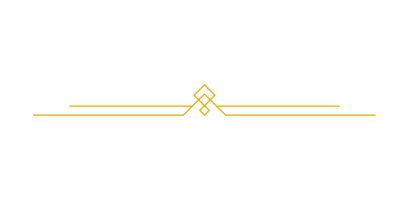

Seja Bem-Vindo

THE DAISY

O restaurante The Daisy foi inaugurado em 1984, ele nasceu juntamente com a menina mais linda desse mundo, hoje mãe de 4 filhos, Daisy administra, junto com o seu marido, um dos maiores restaurantes do Brasil! Foi difícil no início, mas a força de vontade é uma das maiores qualidades da família Bomfim, venha conhecer os nossos pratos e aproveitar o incrível e acolhedor ambiente que proporcionamos. Estamos te esperando!